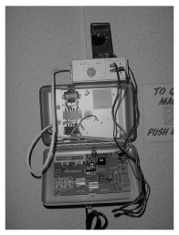
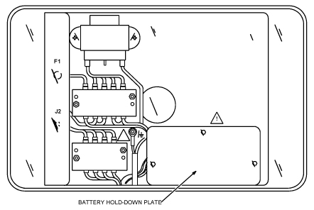

Operating Documentation
Direction 5440001-3, Rev# 6
Signa HDxt Service Methods
Module Version 2.0, Version Date 8/28/09
Operating Documentation |
| Required Persons | Preliminary Reqs | Procedure | Finalization |
|---|---|---|---|
| 1 | Not Applicable | Not Applicable | Not Applicable |
| ||||
| AVOID A QUENCH OF MAGNET! DO NOT ATTEMPT ANY TESTS OR MAINTENANCE ON MRU MODULE UNLESS YOU ARE THOROUGHLY FAMILIAR WITH MRU OR MMCT/MRUT | ||||
Loosen the Phillips screw and open MRU front cover.
Remove cable P2 from MRU J2.
Plug MMCT cable J1 into the MRU J2...Illustration 1.
Plug DVM and leads into the MMCT. See Illustration 1
Place MRU selector switch in position A.
Press MRU Quench button and verify DVM reads 20VDC for 20 seconds.
Move switch to position B and verify DVM reads 20VDC for 20 seconds.
Within 3 minutes, the Quench button should reset by snapping back out.
Verify the Quench button has reset and DVM voltage has dropped to zero.
Press the Reset button located on MRU Circuit board...Illustration 1.
Verify MRU front panel Activated LED is off and DVM reads zero volts in both A and B MRU select switch positions.
Remove MMCT cable J1 and reinstall MRU cable P2 into MRU J2.
Close cover and secure with Phillips screw.
Illustration 1: Circuit Board

| ||||
| AVOID A QUENCH OF MAGNET! DO NOT ATTEMPT ANY TESTS OR MAINTENANCE ON MRU MODULE UNLESS YOU ARE THOROUGHLY FAMILIAR WITH IT. | ||||
Make and install a sticker indicating Panel location and Breaker location.
Locate facility electrical power panel and shut off appropriate circuit breaker to disconnect power to MRU.
Open front cover and remove fuse F2 to isolate batteries from MRU circuits.
Remove quench heater connection from J2.
Inspect entire unit for overheating or discoloration.
Remove battery hold–down plate and look for evidence of corrosion around battery or at battery terminals. See Illustration 2. If any signs of leakage are found, arrange for a battery replacement (46-294231P5).
Illustration 2: MRU Internal Layout

Check capacitor C1 on circuit board for leakage.
Reinstall fuse F2 and battery hold–down plate
| ||||
| PREVENT AN INADVERTENT MAGNET QUENCH BY ENSURING THAT HEATERS ARE NOT CONNECTED TO J2. | ||||
Connect 20 ohm 5% 20 watt ceramic test resistor between lugs 1 and 2 of TB2
Connect a DVM across the resistor.
Press the RUN DOWN button. The DVM should read approximately 20 volts for more than 30 seconds.
Allow at least three minutes for thermal time switch S4 to reset.
Move the test resistor from lugs 1 and 2 of TB2 to lugs 3 and 4 of TB2.
Connect a DVM across the resistor.
Press the RUN DOWN button. The DVM should read approximately 20 volts for more than 30 seconds.
Disconnect the DVM and remove the test resistor.
Reconnect MRU power.
Replace battery every 3 years.
Determine date for next battery replacement
Mark this date on a piece of tape and affix to battery
Enter in the Site Log the date the battery is due for replacement. (You may want to indicate the replacement battery part number is 46-294231P5.)
No finalization steps.